PROSJEKTER · STÅLE KIRKAUNE AS
PROSJEKT 01 · RENOVERING
Komplett renovering av eksisterende enebolig. Inkluderte konstruksjonsarbeider, innvendig tømring, vinduer og overflater — levert fra grunnmur til nøkkel.
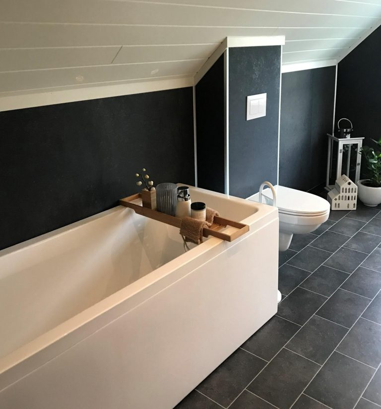
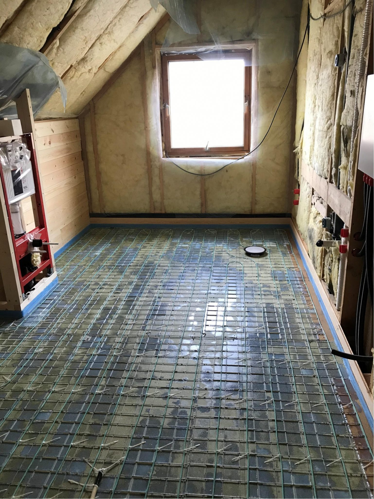
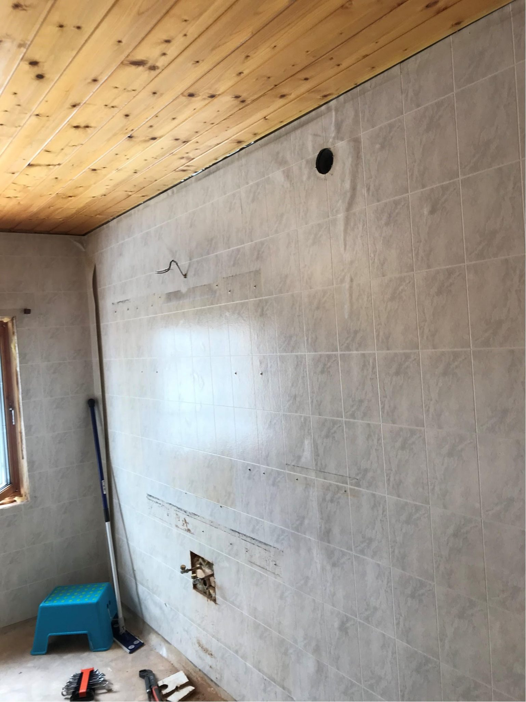

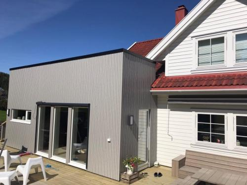
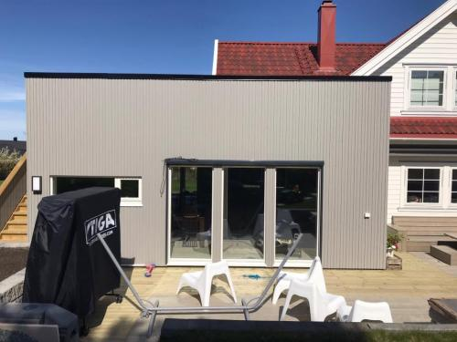

PROSJEKT 02 · TILBYGG
Nytt tilbygg med moderne fasadeplater på eksisterende enebolig. Prosjektet inkluderte konstruksjonsarbeider, innvendig tømring og ny fasadekledning som ble tilpasset husets eksisterende arkitektur.
PROSJEKT 03 · TILBYGG / PÅBYGG
Tradisjonelt hus med saltak fikk et nytt tilbygg i funkisstil med flat takterrasse, samt utvidelse av 2. etasje. Prosjektet krevde nøye tilpasning mellom det eksisterende saltaket og den moderne funkisdelen for å skape en helhetlig arkitektur.
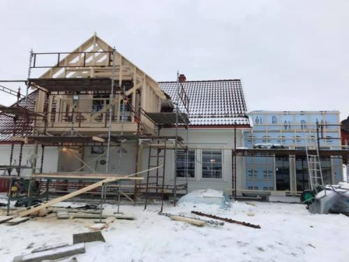
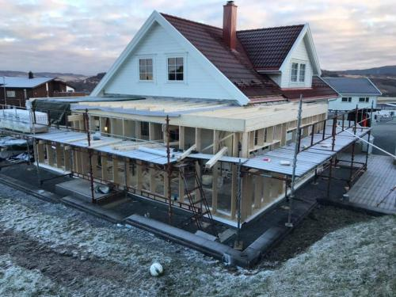

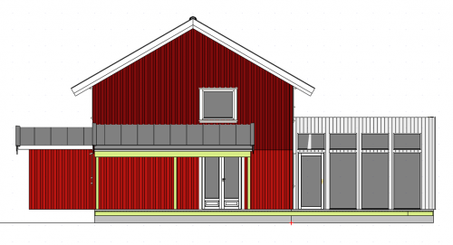
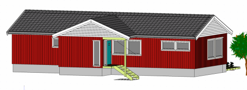
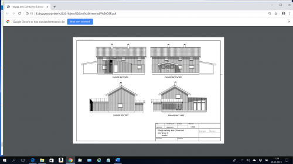
PROSJEKT 04 · TEGNING AV PROSJEKT
Komplett prosjekteringsunderlag for tilbygg med carport og ny glassfasade. Arbeidet inkluderte tekniske fasadetegninger, plantegninger og 3D-visualiseringer som grunnlag for byggesøknad og håndverkere.
PROSJEKT 05 · NYBYGG
Ny fritidshytte bygd fra grunnen av. Bildene viser prosjektet gjennom byggefasen — fra reising av trekonstruksjonen til ferdig reisverk og innkledning. Hytten ble oppført med høy takhøyde og store vindusflater.

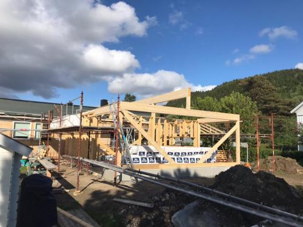
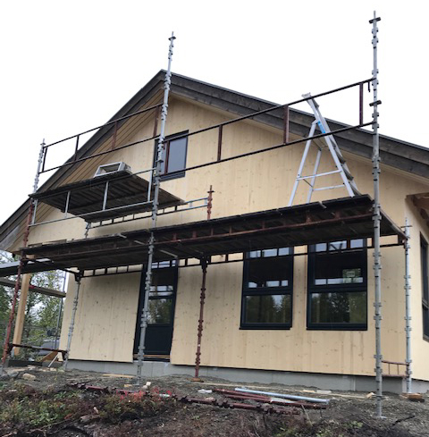

Har du et prosjekt du ønsker å diskutere?
Ta kontakt